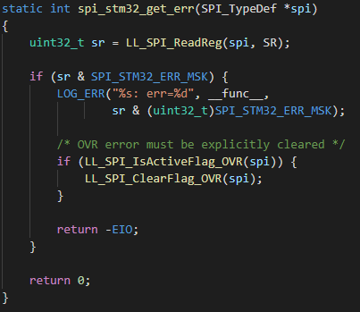
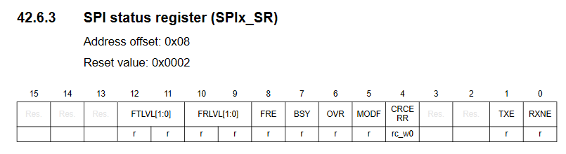

Return Codes¶
This part will discuss what the possible return codes actually mean (thanks for the lack of documentation ZEPHYR)
- -EIO (-5)
This is just a general error code that the zephyr driver returns when anything wrong occurs with the SPI peripheral. To get the actual error code from the STM32 SPI peripheral you will need to enable logging
CONFIG_LOG=yin yourprj.conffile, this is since instead of returning the actual result zephyr feels the need to hide it, and log it instead.This code snippet is found in
zephyr/drivers/spi/spi_ll_stm32.c. Once you get this value from the LOG output you will be able to compare it to theSRregister definition for your STM32 device. For the STM32L475VG theSRregisters contents are as followsAt the time of writing
SPI_STM32_ERR_MSKfor the STM32L475VG causes onlyFRE,OVR,MODFandCRCERRto be parsed, the translation between error code and cause can be seen in the following table, if a value is not in this table try combinations (bitwise-OR), if it is still not present then I don’t know what to tell you, I ain’t omnipitant.STM32L475VG error codes¶ Errorcode
Cause
0x0010 (16)
CRC error
0x0020 (32)
Mode fault (see page 1471 of reference manual)
0x0040 (64)
Overrun flag (i.e. you trying to send too much shit too fast)
0x0100 (256)
Frame format error (used only in TI slave mode)
{kind=link}
{kind=link}